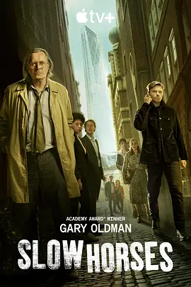

9.3
流人 第二季
Slow Horses Season 2
2022
英国
评分 9.3
导演:
杰里米·洛夫林
演员:
加里·奥德曼 / 杰克·劳登 / 克里斯汀·斯科特·托马斯 / 乔纳森·普雷斯 / 萨斯基亚·里维斯
类型:
剧情,惊悚
剧情简介
第二季依旧将视线投向斯劳豪斯这群被视为“废物特工”的另类队伍。故事伊始，寒风掠过伦敦街头，一名军情五处的前情报员神秘死亡，引发了上层部门的极度紧张。杰克逊·兰姆像往常一样邋遢、刻薄，却敏锐捕捉到事态的不寻常，他拖着疲惫的身子，在堆满文件与垃圾的办公室里评估线索，仿佛随时准备戳穿某个隐藏得很深的谎言。里弗·卡特赖特在这桩事件中看到了摆脱“慢马”标签的机会，他奔走在监控点与废弃仓库之间，从蛛丝马迹里拽住可能的突破口。他的冲劲与兰姆的老辣形成奇妙平衡：一边是直冲前线的年轻特工，一边是靠直觉与经验游走在暗处的老狐狸。与此同时，一场更大的阴影正笼罩情报体系。政治压力、内部掩饰与旧日秘密层层叠加，让斯劳豪斯的每一步调查都像踩在薄冰上。戴安娜·塔弗纳游走于权力核心与秘密会议之间，她的每一次表态都可能导致权力格局的震荡。而另一边，萨斯基亚·里维斯饰演的凯瑟琳·斯坦菲尔德在整理线人档案时，偶然触碰到了被尘封的关键节点，使局势变得愈发复杂。随着线索逐渐逼近真相，角色之间的关系也在暗潮中不断重塑。成员们在深夜街巷潜行、交换密码、追踪逃脱者，他们在紧张的节奏中逐渐意识到：被贬到这里的并不是无能之辈，而是被体制遗忘的战士。他们互相不耐，却在危机重压下展现出独到的判断与行动力。第二季延续冷冽的英式间谍风格，既有隐忍的权谋角力，也有突如其来的现实暴力，氛围沉稳而紧绷。斯劳豪斯的人依旧破败、狼狈，却在混乱的情报世界里一步步逼近阴影深处，展现出属于他们的倔强锋芒。